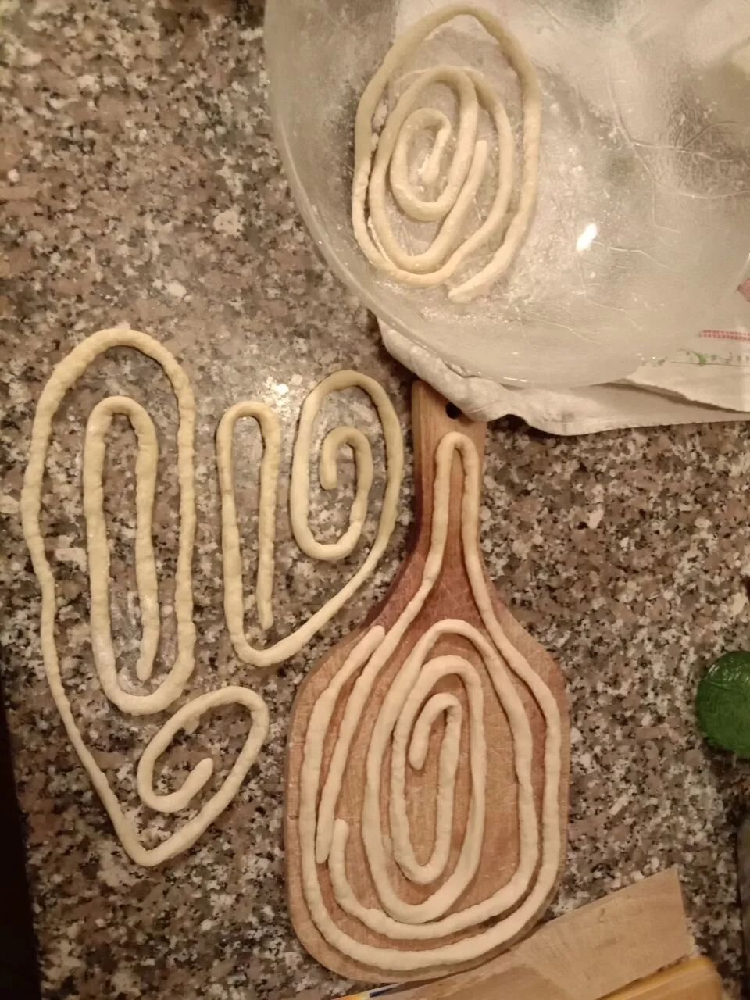
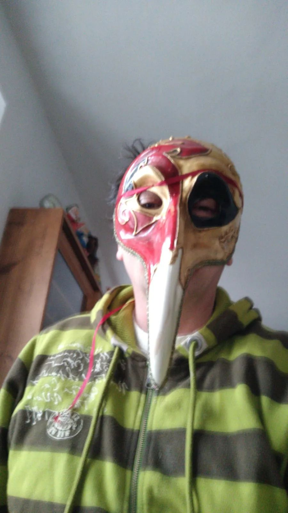

旅欧中国留学生的艰难回国路
原文链接 备份链接 疫情暴发之初，在欧洲的中国留学生普遍比较平静。随着疫情在欧洲迅速蔓延，留学生们就算“确有回国需求”，也很难立即回来，直航纷纷取消，转机充满变数，包机需要审批，既然暂时回不来，那就只能留下来继续抗疫 文 |《财经》记者 …
3月19日，意大利死亡人数超过了中国
这两天增幅开始缓慢下降，但是死亡总人数已经超过了5000，其中130多人为医护人员。
我觉得很疲惫，有些低落，没有想到自己期待多年的意大利生活就生生被这个冠状病毒改头换面了。
为了夫妻团聚来了意大利
从3月8日开始，我一个人在家呆着，我所在的城市被封了，不得不和在附近城市工作的老公分开。
我因为创业的原因好几年两地分居。说来很搞笑，我是为了更方便生活而创业的，因为开发的是网上外语练习平台，这样我不管到哪里都可以兼顾生活和工作学习。我看来是一个喜欢给自己找麻烦的人，这个解决方案让夫妻两地分居多年，然后去年国庆后圣诞节前终于可以告一段落，挪到意大利和老公团圆了。其间我的创业伙伴Bear也过来旅游，我们一起沿途旅行并做节目，挑战多语种的街头视频随访，其乐融融。
圣诞节前是我们结婚十周年纪念日，我们请了家人朋友一起小聚；
圣诞节后，又忙着办理长期居留的有关证件，前前后后折腾1个多月。
看着各项事宜差不多有眉目了，没料想突然中国病毒爆发，整个新年大家都没法好好庆祝，我也在国外提心吊胆的，提醒家人朋友多加小心。经常看到一些报道，有时会焦虑担心，有时会很感动落泪。
我想等国内病毒过去我再回去。
可是，再次没想到的是，当国内基本趋于平稳之后，意大利这边也爆发病毒了。
刚开始的时候我还是比较轻松的，因为我感觉意大利从一开始就非常重视，在判断和处理上没有任何延迟或者误判，加上意大利医疗系统比较完善，全民免费医疗，我感觉应该不会出现什么大漏子。
当一对来自中国武汉的夫妇被查出带病毒后，他们算是意大利境内发现的首个案例。那时是大概2月初。他们被隔离治疗，以后又零星发现有人带病毒，但也觉得是小事，他们马上就被隔离了，而且意大利政府率先停运来自中国的国际航班，一开始大家都觉得有点小题大做。后来被发现不少回国者带有病毒，大家相互提醒务必小心，一旦有感冒干咳现象马上去医院检查下。
2月25-3月2日 病毒初到米兰 我们去南部旅游
但，2月25日情况开始性质变了。政府突然宣布封闭米兰两个区。舆论一片哗然，大家都有点懵。报道说这两个区有两个超级带病毒者，怀疑有大量人感染冠状病毒。
媒体上全是冠状病毒的报道，大家都有点慌神，我出门遇到当地不认识的人，都会遇到警觉的提防的眼神。
我们家人原定的26日-3月2日那不勒斯旅游照常出发了，但因为米兰是冠状病毒的风暴眼，我们从北到南，对能不能进入那不勒斯，能不能正常旅行我们没有把握。老公说：那不勒斯这下可以把你们这些北方人赶回来了。
原来二战后长期以来，意大利北方发达南方落后，曾经大批南部人北上求生，经常遭遇米兰小市民的嫌弃，现在米兰成了菌区，南方人可以狠狠报复一下北方佬了。
姐姐说：不过估计没有什么人现在敢去旅游，说不定参观会非常爽，不用排队，经常会是VIP待遇。我说：只要不把我们封住就行。
我考虑到出游的风险，让家人准备下口罩，可是被告知不是病人不要用口罩。旅途没有备口罩，我有点意外，但考虑到国情不同，估计意大利人口少，只要保持距离估计确实不会有大问题。
从米兰中心火车站坐火车去那不勒斯，车上很空。到达那不勒斯是26日当天傍晚大概5、6点。气温17度，凉凉的但不觉得冷。出来没有任何检查，也没有人拦我们，街上没有人戴口罩，看起来非常平常的样子，不过偶然看到一家药店门口张贴的“我们停卖口罩”的纸片，才让我们想起来有点异常。旅店老板约在一家房产中介门口和我们汇合，并带我们去旅店，他说：今年年初这段时间比往年差很多，没有什么外来游客，包括中国在内的亚洲人都几乎没了。在庞贝古城遗址，导游告诉我们游人比正常少了很多，平时10分钟可以随时找到一个大队导游的活儿，现在需要1个小时甚至更长时间才能凑齐一个10人的小团。让人感到异常的还有晚上回来打开电视报纸，全是冠状病毒的消息和讨论，估计籍着看电视和报纸了解外界的人会非常压抑，闲不住出去约见朋友的人会非常危险，这个时候做一个孤立者反而是最安全的。
冠状病毒对意大利旅游业的影响是显而易见的，米兰和中国人做生意的人普遍感到无奈，一个时装收藏家朋友告诉我，原来和上海方面合作推出的团队商旅被迫取消，年初这几个月一个大单子都没有。正如第一次封城消息发布后，意大利媒体大版标题说的：世界，我们隔离。病毒把世界隔离在家中了。
简单生活 阳台成了道场 邻居守望相助
旅行回到家，没过几天也就是3月8日我所在的城市也封了。
为了工作老公不能回家，他呆在附近一个城市，我们时不时在网上互动。他那边公司宿舍就他一个人在，相当于自然隔离了，也安全。他说每天吃了睡，睡了工作一会儿，然后做下记录，然后吃饭睡觉，生活从来没有这么简单过；

每天喝一杯意式浓缩咖啡是一件美好的事情
我的生活更是超级简单，像学生宿舍一样简单的生活。不能去朋友家串门，一般就呆在家里，白天大概四五个小时学外语、教外语，其它时间我就在花园里捣鼓，慢慢翻土、除草，花园有个烧烤炉，正好给我用来处理干草树枝，我烧掉了大部分柴火，经国内朋友提醒利用他们烤了土豆、茄子和披萨饼。

我自己动手做的面条
我至今只出门了一次，就是去附近超市和花店买了些蔬菜和鲜花种子，市场物质还是照旧丰富，价格也是照旧的。结银处的店员说：这个星期恢复正常了，不像上一两周那么疯狂。
花店店员告诉我：因为是农副产品所以店铺还能开着，但病毒这样发展下去，也不知道能坚持多久。

超市碰到的奇特口罩
咖啡吧、理发店、百货店和餐馆等都关了，街上戴口罩的人多了起来，除了靠近居民小区外的车子多了很多表示大家都在家以外，其它看起来一切如常。不少车来车往，偶然有人出来遛狗，或者骑单车的人经过。欧洲小城市一般人都不多，比较安静。这里都没有中国人那样的小区概念，没有物业管理，没有门岗，居民可自由出入，但大部分人都因为安全问题选择留在家里。
邻居看我一个人在家，就对我说：你有什么需要帮忙的就告诉我。我谢了他，也对他说了同样的话。我们经常隔着院子在各自阳台对话，打个招呼问个好，相互交流一些重要信息，比如视频里他告诉我，他在看一份钓鱼的杂志，可惜本市没有河流，不能出城钓鱼了。只能停顿下来。他告诉我，当天政府公布了一个新法令，说封城将延长到4月底。他问我是否考虑回中国，我说路上太危险，还是呆着原地比较安全。
和邻居阳台上的对话
意大利人是典型的阳光灿烂型，特别喜欢社交和交谈，封城之下也挡不住他们热情的本性。他们变着法子自娱自乐，有一个在家中利用杂志演绎飞机出游的非常有趣，甚至有人号召大家一起联手利用阳台搞大型音乐会。3月12日的时候，家庭群里突然收到哥哥转发的帖子，3月13日周五下午六点正，所有意大利人都拿起你们的乐器到你们的窗台发声，我们将用短短的几分钟把我们国家变成一个巨型免费音乐会场！请尽可能分享给你认识的所有人知道！！第二天，果真到了六点，窗外你能听到不少乐器稀稀拉拉然后此起彼伏吹奏的声音！
封城封城封城 到处都缺口罩
3月1、3、8日分别宣布新的法令，封闭第二批、第三批、第四批新的城市和区域，关闭咖啡吧、集会等公共场所和活动，直到3月9日宣布全国封闭，3月20日宣布封闭包括公园、别墅集会在内的更多的公共场所和活动。
每天政府公布的感染和死亡数字似乎一直在增加，直到19日，死亡人数达到3405人，超过了中国。
姐姐因为是公务人员必须上班，她在家庭群分享了自己用纸折的口罩，她说：我刚经过封城路口，可怜的执从勤警察都没有口罩。现在只有医患人员有口罩保证。
我这才意识到这里口罩缺的厉害。我问家里人要不要从中国弄点口罩，他们都说：那敢情好啊。
网上甚至流传一个意大利黑帮不卖毒品改卖消毒洗手液的短视频，自黑桥段让人大笑之余可以想象如今一些相关防疫用品的缺乏。

不，奶奶，这个口罩不行
3月19日 投桃报李 大批死亡的悲哀
老公说看到媒体报道说中国又派了一批医生并送来了大批设备和物资到米兰。
我说你知道么，中国有报道说：因为以前意大利帮过中国，所以现在中国人也过来帮助意大利，所谓“投桃报李”。很费劲解释了这是什么意思，他没有弄明白，说：去帮助需要的人不是很正常的么？我不知道以前我们支援了中国，我们也支援很多其它国家，当他们有难的时候，意大利医疗队就会马上设法提供帮助。
但在中国人看来，这是报恩和投桃报李。这次国内不少报道说中国支援意大利，“没有无缘无故的爱”，因为此前很多次意大利在中国最困难的时候救了中国人，包括四川汶川大地震，第一支达到救助的国际援助就是来自意大利云云。但实际上意大利人都不知道有这么回事，他们从不做宣传，我的一个医生朋友曾到北京多年支援北京急救中心建设，他也没有特别告诉我背景，只是说在北京医院呆了几年。他们的理念是“博爱”，就是对生命的尊重，如果哪里弱者需要帮助，他们尽量提供救助。这对他们是很普通自然的事情。他们看到中国人来帮助他们，他们很感动，很感谢中国人的无私和慷慨。但他们没有你来我往的报恩思维，也不会理解那是由于此前帮了中国的投桃报李结果。我想这是文化背景的不同，也许随着中国逐步走向世界舞台，中国人和世界对话的语言体系也需要升级。
今天的感染总人数超过了4万，当天新增确诊5322人。死亡人数达到3400，超过了中国。
伦巴蒂有两个地方最严重，其中Bergamo我是去过的，那里是廉价航空机场所在地，我很多次欧洲内旅行都是通过那里的。报纸上说这里死亡人数太高了，每七个死亡人中就有一个出自这里，由于死亡人数太高，大大超出当地火葬场的处理能力，甚至出动了军车把棺材拉走到愿意接收处理的地方去。看着图片里密密麻麻排满棺材的房间，以及拉走棺材的长长的军车车队，这是一种怎样的悲哀啊。
一个让人稍微感觉到开心安慰的是那对意大利境内的首例冠状病毒案例，一对来自武汉的夫妇，今天当地媒体报道他们基本上康复出院，转到另一家医院休养巩固恢复。妻子非常开心地对媒体和医护人员竖起大拇指说: I LOVE YOU! 感谢无处不在的善意和生命关怀！
下午上课完后，去olla练法语。每天我和一个女大学生相约晚上大约10点后一起练大约半个多小时外语，她练德语，我练法语，我们鸡同鸭讲的模式自学，已经进行了2个多月了，感觉非常棒。她用德语说她今天练了平板支撑，很累。我不明白什么是平板支撑，她就想办法用德语给我各种解释，包括她的动作要领等等，我大概明白那是什么动作了，于是用法语提问或者描述我认为的意思加以确认，她建议我回头试试这个动作，就这么半个多小时很快过去了，她该睡觉了，我也该做农民和准备晚餐了。
在家当农民
3月20日 口罩终于运到了
我的国内好友分别从杭州和南京给我寄了两次口罩，第一个包裹20日一早送到家门口。
我赶紧打开一看，哇，6包口罩垫，大约10个各种口罩。中国人太聪明了。竟然发明了口罩垫，这样一个口罩普通情况下可以使用无数多次，只需要换里面的芯即可。
细心的朋友这次寄给我的时候特意用毯子包着，她担心会被人截下来，物品也写着毯子。

朋友寄来的口罩
我赶紧发到家庭群，看看谁急需要。大家都欢呼起来，姐姐说：都说家里最好要有律师或者医生，现在家里最好要有中国人！终于有口罩啦！他们招呼侄女的男朋友菲利普来取并带给他们，菲利普来了，他戴着一个防尘N95口罩，他说因为在无人的野外工作，所以他可以走动，不过他戴着这个口罩是以前在网上买的三个之一，疫情来的时候一个给了女友我外侄女，自己一个，家里人其它人一个，由于一直买不到，他这个口罩已经戴了一个多星期没换了。他站在离我一米开外的地方，把手伸得长长的把装有口罩的包拿走了，并取了以前放在我家的长梯子走了。我们说话都是几米开外。我多给了他一包口罩垫，我说：你用这个多垫一层可换的芯，安全很多。
我告诉对面邻居家我有口罩了，问他要不要，他喜出望外也要了两只口罩。
口罩来了以后我分送给家人邻居家
我才知道很久以来药店里都没有口罩供应了，大家使出浑身解数去弄口罩，但之前我问他们的时候，他们都说不用口罩，除非自己得病了。现在看来大家观念改变了，但是由于停工在家，大家也就呆在家里不出门了，自然可以不用口罩。但其实总是需要偶然出门在外的，有口罩做备用都是非常重要的。
不过我注意到一个细节：纸箱里只有十个口罩加六包口罩垫，朋友说不记得给我寄了多少个，不过肯定不止这个数字。不知道哪个环节被人偷偷“截”了。

朋友戴的口罩真是无敌了，连虫子都可以防
3月21日 政府再进一步封闭公共区域
今天嫂子分享了一份新的法令，政府进一步宣布全国禁止人们到一些诸如公园、别墅、游艺区以及公园去。
但是哥哥说：米兰地铁和电轨车还是非常拥挤，这个没有停运，还是不管用。
似乎意大利人散漫自由的天性帮了倒忙，还有不少人想方设法聚集社交，死神也难以促使改变。他们社会治理机制不同，不可能采用中国那样的全民监控政策，因为大家强调民主和隐私权利，无法运用类军事化管控方式，政府无权实时公布病人分布情况和跟踪病人接触范围，只能在调查每个新增案例后，由专业人员和志愿者跟踪和通知所有他接触过的人群，并立即进行检测和排查、隔离等。而且由于冠状病毒有很多携带者并无明显病症，这就给工作带来了更多困难。
今天总感染数53578，死亡总人数4825。
3月22日 意大利的医疗系统彻底崩溃？
有朋友发了一篇所谓的真实的意大利情况，说的非常吓人，说基本上这个国家完蛋了，医务人员不够，仪器设备严重短缺，只好放弃老人，只救治年轻人等等。
这显然不是事实。
确实，按照死亡人数，前天死亡人数已经超过了中国，今晚数据又有所增加，达到5476。总感染人数今晚已经达到59138，但看增幅已经开始缓慢下降了，新增5000多人，比前几日增幅开始减少了，死亡人数增幅也在减少。
但是可以仔细看看数据，总感染人数为近6万，但是目前在观察和治疗的是46638，其中23783在家中隔离，重症监护3009，留院治疗者19846。真正留院重症监护的数量并没有达到完全无法应付的局面。另外，昨日政府发出招募300名医疗志愿者，结果有7000人参与了报名。此前政府把之前关闭的很多医疗机构又再度启用，让很多医学院毕业生（还没通过上岗资格考试者）直接进入医院紧急补充缺口，可以说还是有不少施展空间的。
而且，意大利的医生一直以来，只有一个职业理念，就是生命为本，他们从不在乎你的身份和背景，对于他们，救治生命是最大的善。所以在他们的案例处理中，极端情况下可能出现临时医疗资源缺失，需要对救治进行判断，但他们的判断标准不是年龄，背景，性别，民族等，他们只有一个标准就是可以救治的几率。所以理论上是有可能需要医生作出救治优先抉择，但不是放弃老人等等情况。这在意大利是不可能发生的。我们通过在医院工作的朋友打听，都确认没有发生这种产惨状和悲剧。
不过当听到这个死亡人数这么巨大的消息的时候，我心里非常难过，特别说到其中130多名是医护人员，他们大部分在一开始的时候都缺乏足够的对传染病的防护认知。
被认定的第一例意大利感染者治愈回家了。低落之处还是能让人看到一些积极迹象。(原载《中国文化报》)
（未完待续）
（老鹰 olla外语角创始人)
相关日记链接：
1.老鹰疫情日记/ 一位中国女人在意大利的疫情反思：往来都是暂时人
老鹰周课：像学母语一样学英语
老鹰五年来自学五门外语，意大利语，英语，西班牙语，俄语，法语等，她认为最好的英语学习方法就是像学母语一样学英语。现在她推出老鹰周课，由她本人亲自带，一周突破开口难，五天课时，每天30分钟。

微信扫码即可购课,价格300元
Finally! Haha!
It’s our way to learn languages.
Join us!
Contact us olla#olla.im or download olla to join us right away!
下载二维码
相关推荐


如有疑问
扫码添加客服微信（ollaQ_staff）
文章已于修改
原文链接 备份链接 疫情暴发之初，在欧洲的中国留学生普遍比较平静。随着疫情在欧洲迅速蔓延，留学生们就算“确有回国需求”，也很难立即回来，直航纷纷取消，转机充满变数，包机需要审批，既然暂时回不来，那就只能留下来继续抗疫 文 |《财经》记者 …
原文链接 备份链接 [ ](https://app.21jingji.com/html/2020yiqing/?from=timeline&isappinstalled=0) 导读：希望病毒和愚昧、偏见都早点过去吧。 来 源丨21 …
原文链接 备份链接 . 意大利怎么了？ 汪玮Laetitia 03-02 00:27 投诉 阅读数：26311 . 确诊人数过千，死亡人数近30，意大利真的陷入危险了吗？ 越来越多的亲友问我，现在还好吗？ 为了免除一一回复的麻烦，亲 …
原文链接 备份链接 昨日，米兰有小区突然宣布封闭，我住的城市都灵离米兰大概30多分钟车程，电视里轰天轰地的全是冠状病毒的消息，把人一下就弄晕了，我和家人一个多月前计划的那不勒斯旅游正好是今天开始，我们讨论了一下，决定还是出发，毕竟觉得有疫 …
原文链接 备份链接 今天是3月16日，月相为49%的下弦月。 It is March 16 with a 49 percent of Last Quarter. 距离新月还有 8 天。 There are 8 days until New …